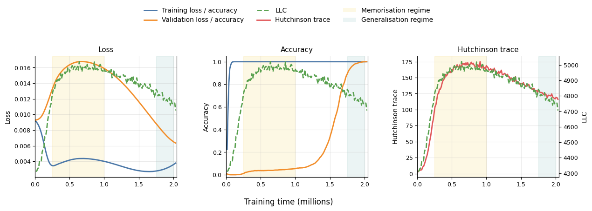
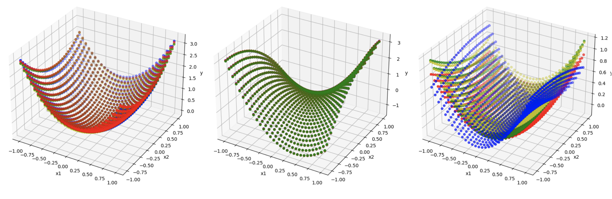
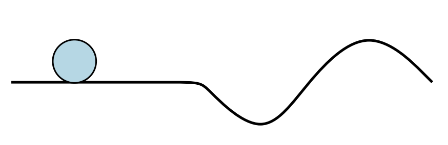

01
Structure
What can a network represent?
Neuromanifolds, neurovarieties, parameter symmetries, and identifiability reveal the geometry behind a model's function space.
Neuroalgebraic geometryMathematical foundations of learning systems
I am a postdoctoral researcher in the Section of Mathematics and Artificial Intelligence at MPI-CBG in Dresden. My research connects algebraic geometry, singular learning theory, and statistics to make the behavior of modern learning systems mathematically legible.
I received my PhD in Statistics from UCLA, where I was a member of the Mathematical Machine Learning Group. In September 2026, I will join ILIAD as a Fellow.
Research agenda
Neural networks are highly singular statistical models. I develop tools for describing their geometry, predicting their learning behavior, and determining which claims about them can be made rigorous.
01
What can a network represent?
Neuromanifolds, neurovarieties, parameter symmetries, and identifiability reveal the geometry behind a model's function space.
Neuroalgebraic geometry02
Why does learning change phase?
Singular invariants such as the local learning coefficient offer a new language for loss landscapes, generalization, and grokking.
Singular learning theory03
What can we know reliably?
Identifiability and invariant structure are the starting point for provable interpretability, robustness, and trustworthy AI.
Mathematical guaranteesSelected work

Singular learning theory · 2026
We interpret grokking as a transition between competing solution basins and show how the local learning coefficient tracks their statistical preference.

Neuroalgebraic geometry · 2024
We characterize the function spaces of polynomial networks as semialgebraic sets and introduce geometric measures of expressivity and learning complexity.

Algebraic statistics · 2026
Higher-order cumulants make parameters identifiable beyond the Gaussian setting, connecting algebraic geometry with structure learning for directed systems.
Now & next
Recent papers, talks, programs, and community-building around the mathematics of learning.
I will speak at the Mathematics Colloquium at Nanjing University and participate in IPAM's Foundations of Interpretability workshop at UCLA.
I will begin an ILIAD Fellowship, developing connections between mathematical learning theory and reliable AI.
I am lead organizer of the inaugural Singular Learning Theory Days at MPI-CBG in Dresden, October 26–27.
I will be in residence at ICERM for the semester program Metric Algebraic Geometry — Going Global.
Beyond the papers
I care deeply about mentoring, teaching across mathematical backgrounds, and creating spaces where new collaborations can take shape. Outside work, you will usually find me with my husband and cat, playing badminton, or trying to keep everyone near a computer properly stretched.
A little more about me
Spiritually, a slightly more faithful portrait.